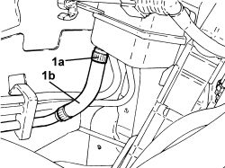
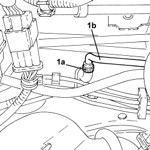

1820B39 HOSE FROM CLUTCH RESERVOIR TO MASTER CYLINDER - R.R. FOR RIGHT HAND DRIVE VERSIONS
- Path
- Procedures > 18 CLUTCH UNIT > 1820 CLUTCH RELEASE CONTROLS > 1820B HYDRAULIC CLUTCH SYSTEM > 1820B39 HOSE FROM CLUTCH RESERVOIR TO MASTER CYLINDER - R.R. FOR RIGHT HAND DRIVE VERSIONS
- Kind
- repair procedure (removal / refitting; the operation number is the code)
- Applies to
- engines: 2.2 JTS; all production periods
- Interactive page
- https://sloeber94.github.io/elrnDB-aBrrSpdr/en/#/946004005
Applies to: engines: 2.2 JTS; all production periods
 Removing
Removing
 Refitting
RefittingOp. 1016A10 SOUND-PROOFING COVER - R.R
- Using a suitable syringe, draw off the brake/clutch fluid from the reservoir.
- Unscrew the engine coolant reservoir fixing nuts and move it aside.
1. Loosen the band (1a) and disconnect the pipe (1b) from the clutch reservoir to the master cylinder.

Applies to: engines: 2.2 JTS; all production periods
- Open the clips retaining the pipe to the engine compartment bulkhead.
1. Loosen the band (1a) and disconnect the pipe (1b) from the clutch reservoir to the master cylinder and remove it.

Applies to: engines: 2.2 JTS; all production periods
Refitting
Removing- Place the pipe from the clutch reservoir to the master cylinder in position and close the retaining clips on the engine compartment bulkhead.
- Connect the pipe to the clutch reservoir and to the master cylinder and secure it using the bands.
- Place the engine coolant supply reservoir back in its housing and secure it using the nuts.
Op. 0010T64 BRAKE AND/OR CLUTCH FLUID CHECK LEVEL AND TOP UP AS NECESSARY